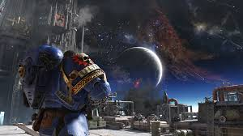

Console Insider
Welcome to Console Insider , your ultimate destination for all things gaming. Whether you're a seasoned pro or just starting out your gaming journey , Console Insider offers a vibrant community , in depth reviews , and the latest on all things gaming. Join us as we navigate the ever evolving world of gaming. Below you'll find some of your favorite games and some informational articles linked to them!

In Warhammer Space Marine 2, feel the ferocity of Warhammer 40,000 like never before! As you fight against the unrelenting Tyranid swarm in stunning settings, don the armor of the courageous Adeptus Astartes. In addition to an exciting single-player narrative and exhilarating multiplayer options, this action-packed sequel blends visceral combat with rich lore. Get ready to unleash your rage and protect humanity in the bleak future with improved graphics, fluid gameplay, and vicious new powers!
Prepare yourself for thrilling combat in Dragon Ball Sparking Zero! Players can use their favorite moves in fast-paced, action-packed battle in this dynamic fighting game, which combines recognizable characters with breathtaking visuals. Fans can immerse themselves in the Dragon Ball universe like never before thanks to a redesigned fighting system, large arenas, and an engrossing story mode. Engage in fierce one-on-one combat or form a team with pals in online multiplayer. Dragon Ball Sparking Zero is the ultimate showdown, so be ready to power up!
New DLC News
Enter the intense world of Call of Duty: Black Ops 6, where covert operations and high-stakes missions redefine the battlefield! This latest installment features cutting-edge graphics, an expanded multiplayer experience, and a gripping campaign that plunges players into a web of espionage and betrayal. Customize your loadouts and tactics to gain the upper hand in both classic and innovative game modes. With a focus on teamwork and strategy, prepare for a heart-pounding journey through some of the most iconic conflict zones in history. Gear up and get ready to answer the call!